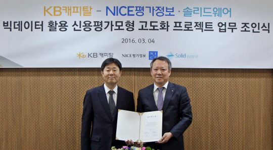

2016-2-7

KB캐피탈(대표 박지우)은 NICE평가정보(대표 심의영)와 ‘빅데이터를 활용한 신청평점모형 개발 계약’을 체결했습니다.
신청평점은 신규로 신용거래를 신청한 고객 신용평가를 위해 개발된 것으로 대출 승인여부 등 의사결정에 활용되고 있습니다. 이번 신청평점모형은 NICE평가정보와 빅데이터 분석능력을 갖춘 핀테크 업체인 솔리드웨어(대표 엄수원 올리비에듀셴)가 참여하여, 소비자 특성에 맞는 새로운 분석기법을 도입합니다.
빅데이터를 분석하고 가공해서 새로운 정보를 얻어 내거나 미래를 예측하는 기술인 머신러닝(Machine Learning) 기술을 이용해 기존에 활용하지 못했던 다양한 정보 상관관계를 최대한 활용해 승인 및 한도 전략 수립에 활용할 예정입니다.
정보가 부족하던 소호(SOHO) 대상 고객, 신용정보 부족(Thin File) 고객, 중하위권 신용등급 고객 분석에 변별력 있는 분석 기법으로 이용됩니다.
또 인터넷 전문은행 출범에 따른 업무자동화에 대응하기 위해 고비용 구조 심사 프로세스를 개선하고, 심사자의 유기적 판단 방식을 시스템화해 7월 중 모형 개발을 완료할 예정입니다.
박지우 KB캐피탈 대표는 “핀테크를 통한 빅데이터 분석 기술을 활용해 1차적으로 대손비용을 줄일 수 있을 것으로 예상한다”며 “향후 CRM, 본인 인증 등 최신 핀테크 기술을 접목시켜 다양한 서비스를 제공하겠다”고 말했습니다.